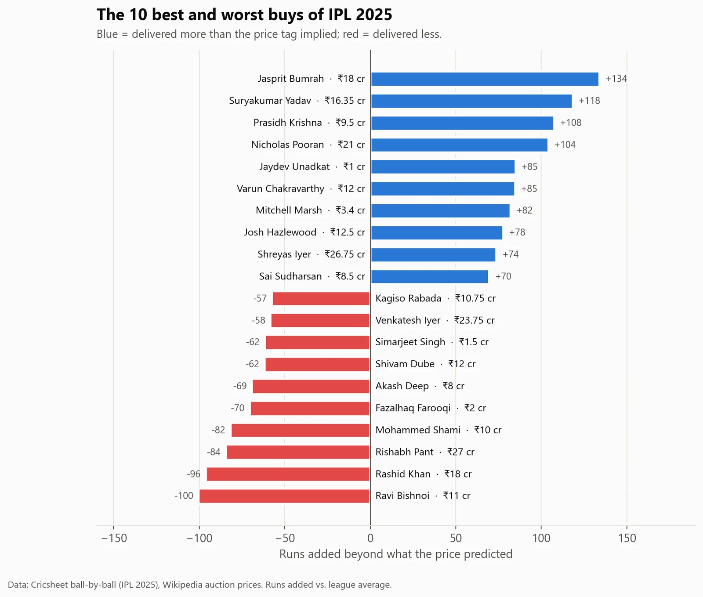
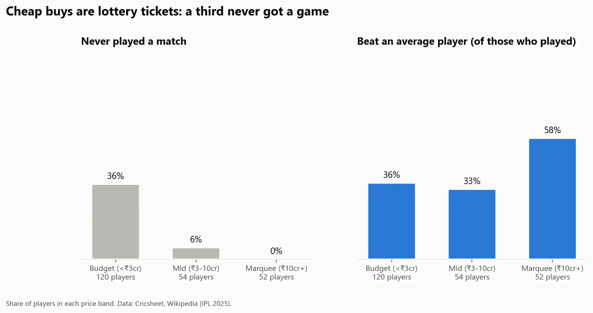
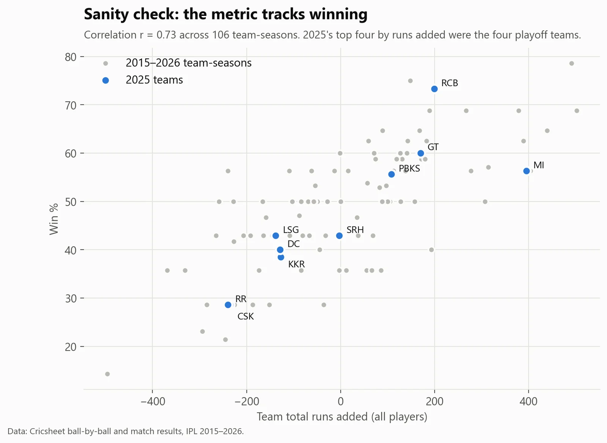
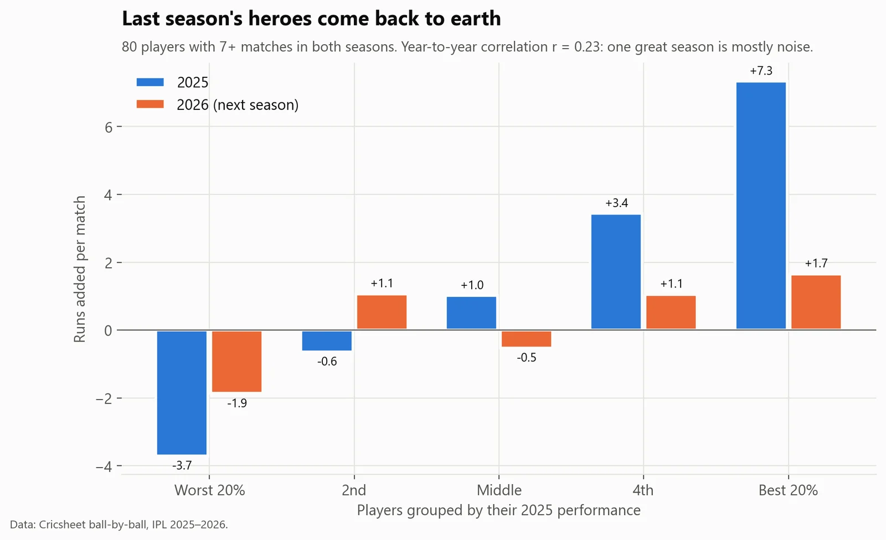

Sports analytics · IPL 2025
Moneyball IPL: which ₹‑crore buys were busts, and which were steals?
- Business question
- Are IPL teams getting value for their auction money?
- Key finding
- Mostly not. Auction price explained only about 10% of what players delivered. 36% of budget buys never played, mid-priced players were the weakest band, and last season's stars fell back the next year.
- Recommendation
- Don't pay for one hot season. Spend on proven, consistent performers (elite bowling was the best value), and don't fill the squad with budget buys who never play.
- Estimated impact
- 10%Of player performance explained by auction price, across ₹1,180 crore spent on 226 players.
- Data
- Every ball of IPL 2015–2026 (Cricsheet), 226 auction prices (Wikipedia)
- Metric
- Runs added vs. an average player
- Tools
- SQL (DuckDB), Python, pandas
Results





How I did it
- Defined "runs added": every ball is compared with what a league-average player would have done on that ball, in the same season and phase of the innings. Batters gain for scoring faster and losing their wicket less often than average; bowlers the reverse.
- Wrote the metric in SQL with window functions and league baselines.
- Matched auction names to scorecard names ("Ruturaj Gaikwad" vs "RD Gaikwad") using exact matches, an alias list, surname plus initial, and fuzzy matching; four were fixed by hand.
- Checked the work: league totals must add up to zero each season (this caught a bug where missing values were silently skipped), and the results barely change if a wicket is valued at 3, 6 or 10 runs.
What could make this wrong
- Fielding, captaincy and wicket-keeping aren't measured.
- One season is a small sample; rankings describe what happened, not true ability.
- Mid-season replacement signings aren't included.
What I learned
- Design the KPI first, then prove it means something: teams' runs added predicted their win rates (r = 0.73).
- Name matching is half the job: four matching methods, documented manual fixes, and every unmatched player checked.
- Reconciliation checks find real bugs. The league total should be exactly zero, and a NULL-handling error broke that until I fixed it.
What I'd do next
- Add fielding and wicket-keeping, which the metric misses.
- Use several seasons per player to separate skill from luck before ranking value.
- Turn the fair-price line into an auction tool: a maximum sensible bid for each player.